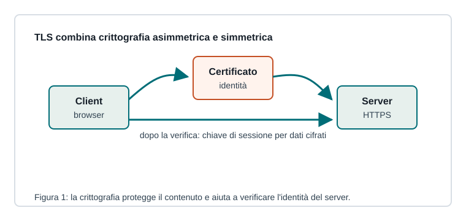

Capitoletto 5.2
Crittografia e comunicazioni sicure
La crittografia permette di proteggere dati in transito e a riposo, verificare identità e rilevare alterazioni.

Crittografia simmetrica e asimmetrica
Nella crittografia simmetrica la stessa chiave cifra e decifra: è veloce ma richiede condivisione sicura della chiave. Nella crittografia asimmetrica si usano chiave pubblica e privata: è più adatta a scambiare segreti e verificare identità.
Hash e firme digitali
Una funzione hash produce un'impronta del dato. Se il dato cambia, cambia anche l'hash. La firma digitale usa crittografia asimmetrica per collegare un messaggio a un'identità e verificarne l'integrità.
| Strumento | Protegge |
|---|---|
| Cifratura | riservatezza |
| Hash | integrità |
| Firma | integrità e autenticità |
| Certificato | identità della chiave pubblica |
Certificati e autorità
Un certificato digitale lega una chiave pubblica a un soggetto, come un sito web. Le autorità di certificazione sono entità fidate che firmano certificati, permettendo ai client di verificare l'identità del server.
TLS nella navigazione
Durante una connessione HTTPS il client verifica il certificato del server, negozia algoritmi e stabilisce una chiave di sessione simmetrica. Da quel momento il traffico è cifrato.
Il lucchetto del browser indica una connessione cifrata verso un server identificato, non garantisce da solo che il contenuto del sito sia affidabile.
Ripasso
Perché TLS usa anche crittografia simmetrica?
Perché è molto più efficiente per cifrare grandi quantità di dati dopo lo scambio iniziale sicuro.
A cosa serve un certificato?
A collegare una chiave pubblica all'identità di un soggetto verificabile.